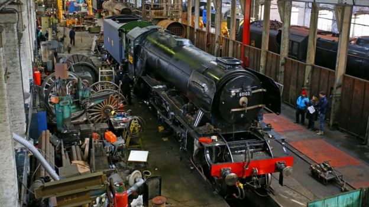

Preservation
In 1962, the railway that ran the Flying Scotsman announced that they would sell the locomovtive for scap at a price of 3,000 British Pounds. A group called "Save Our Scotsman" made an effort to fundraise the money to prevent the locomotive from heading to the scrapyard buth the group fail their mission. In 1961, a gentleman named Alan Pegler got 70,000 pounds when his grandfathers company was sold. When he found out the locomotive was going to be scrapped, he ceased the opportunity to buy it front-forward and spend the next few years afterwards fixing and maintaining the icon. In the 1960's Steam excursions on British Railways was disappearing. The water towers steam engines needed to refill on water were being destroyed. So, in September 1968, Alan Pegler bought the engine a second tender to store water in with access to the tender by a gangway plank. Few other people on and off had ownership of the Flying Scotsman from 1972 until the early 2000's. In April 2004, The Flying Scotsman was bought by the National Railway Museum. In Janurary 2006, The flying scotsman went into the museum's workshop for what would be a decade long overhual to restore it to orignal specifications but, with a new boiler installation for a new cerfiticate. January 2016 saw the locomotive's overhual finally come to a end. The Flying Scotsman will be making special trips around the UK throughtout 2016.
